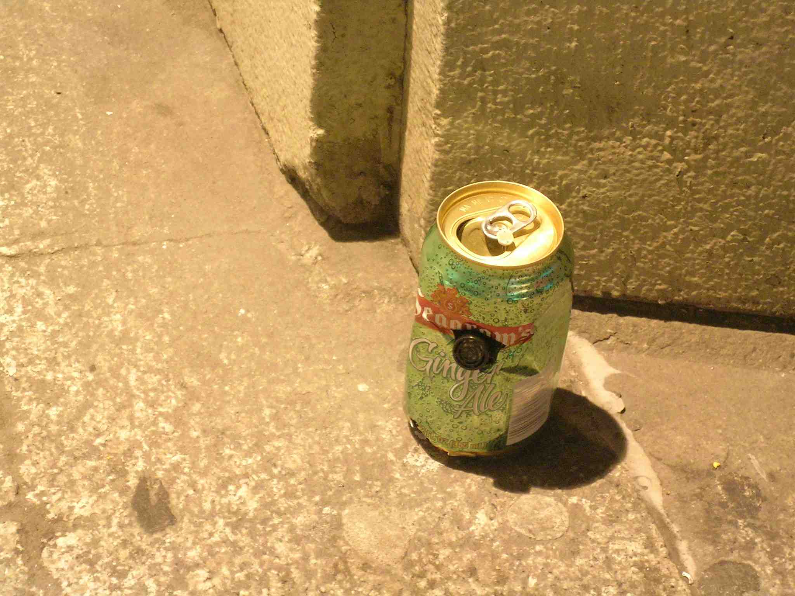

people doing strange things with electricity
The 1493.456 × 1023rd dorkbot-nyc meeting took place on Wednesday, September 5th, 2007, at 7pm at Location One in SoHo.
It was a special pre-Conflux Festival preview!
It featured the sun-kissed and downy:
Christian Croft & Kate Hartman: Energy Harvesting Dérive
The Energy Harvesting Dérive combines new modes of pedestrian movement with alternative energy research goals. The project hacks the recently popular Heelys roller sneaker to transform it into a platform for generating electricity from human motion. Electricity harvested from rolling powers electronics on the shoes that deliver random directions for pedestrians to follow.
http://xncroft.com/projects/energyshoes.html
Mouna Andraos: Sustainable practices in electronic art and design
A few case studies and lots of questions. I will present a series of electronic objects/projects i have recently been working on, from electronic crafts to alternative power sources.
http://www.missmoun.com
http://www.electroniccrafts.org
Michael J. Dory: Concrete Crickets
Graffiti is one of the most powerful and most personal displays in the urban experience, and can be used to make statements, tag territory, spread messages — urban markup language in practice. However, the output is nearly always visual in nature, making this experience one-dimensional. Furthermore, rarely does the work have a brain of its own, and is usually incapable of reacting to anybody observing it. Concrete Crickets was created to address this deficit, creating small devices that will be aware of passers-by as well as other units of their kind. Each unit consists of a sound generator, amp, speaker and sensory system, and is housed in camouflage appropriate to the streets of the city — soda cans, cigarette packs, and the like.
http://www.confluxfestival.org/conflux2007/concrete-crickets-2